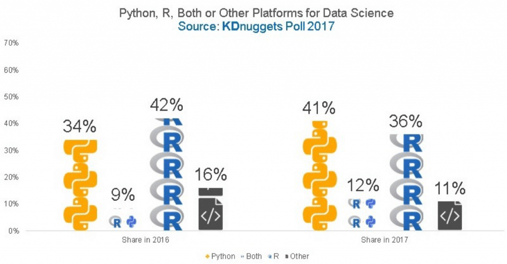

R vs Python: Which one is much better for Artificial Intelligence Development
For a growing variety of individuals, information scientific research is a central component of their task. Boosted data accessibility, more effective computing, and also an emphasis on an analytics-driven decision in organisation has made it a heyday for data science. According to a record from IBM, in 2015 there were 2.35 million openings for information analytics jobs in the United States. It approximates that the number will climb to 2.72 million by 2020.
Both most popular and also finest programs languages for AI job are Python as well as R at the moment (many studies have actually discovered this to be true, along with this Data Science Survey carried out by O'Reilly). It is hard to pick one out of those two surprisingly adaptable information analytics languages. Both are open and cost-free resource as well as were created in the very early 1990s-- R for analytical analysis as well as Python as a general-purpose programs language. For anyone interested in artificial intelligence, working with big datasets, or developing complex data visualizations, they are absolutely crucial.
There are a great deal of researches offered comparing the fostering and appeal of R and Python. While these numbers frequently give a great indicator of how these two languages are progressing in the general community of computer technology, it's hard to contrast them side-by-side. The main factor for this is that you will certainly find R just in a data scientific research atmosphere. Python, on the other hand, is commonly utilized in numerous areas, such as web advancement. This typically prejudices the ranking results in favour of Python.
In terms of the capability to build and also develop an AI system, both R as well as Python have trusted as well as massive collections. But they vary in some other relevant aspects:
R Pros:
- Commonly utilized, specifically in Academia and Research. Statistical designs as well as complex solutions can be composed in a few lines. Makes it a wonderful suitable for AI modelling.
- Substantial area with great deals of support.
- In visualization collections, R wins by far.
R Cons:
- The worst feature of R is that it was created by statisticians and also for this reason has a huge knowing curve and also is annoyingly unintuitive.
- It is hard to integrate R code right into other systems, which is why it is not made use of a whole lot in the sector today.
Python Pros:
- Much more user-friendly and also user-friendlier than R, liked by developers.
- It's a full-fledged programming language, so it's very easy to incorporate as well as carry out ML/AI systems for production use.
Python Cons:
- A few of the modules of R which can be of terrific worth in ML formulas aren't readily available or have no replacement in Python.
- In particular circumstances, one language or the various other may be far better matched for a particular circumstance or make use of case, or perhaps also a various language such as Scala (for Spark), C++, and so on
Information Modelling is truly crucial for ML and AI. It forms the base of everything the algorithm discovers. And judging the languages in question based on this factor is very important. Best programs languages for AI require to have great data modelling capacities. In python, you can do numerical modelling evaluation with Numpy. You can do scientific computing and calculation with SciPy. You can access a lot of powerful equipment learning algorithms with the scikit-learn code collection. scikit-learn offers an intuitive user interface that permits you to touch every one of the power of machine learning without its numerous intricacies.
In order to do certain modelling evaluations in R, you'll occasionally need to depend on bundles outside of R's core performance. There are lots of plans available for details analyses such as the Poisson circulation and mixtures of likelihood laws.
Chicago Custom Software Development Company: https://www.velvetech.com